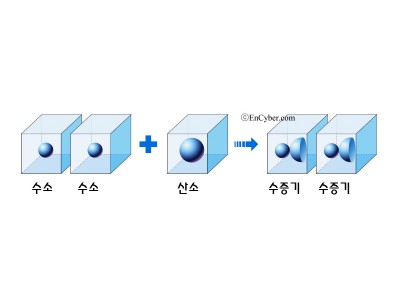

질량불변의 법칙이라고도 한다.
1774년 프랑스의 화학자 라부아지에에 의해서 발견되고 란돌트와 외트뵈시에
의해 실험적으로 검토되어, 실험오차의 범위 에서 충분히 성립된다는 것이
증명되었다.즉, 화학반응의 전후에서 원물질을 구성하는 성분은 모두 생성물질을
구성하는 성분으로 변할 뿐이며, 물질이 소멸하거나 또는 무에서 물질이 생기지 않는다는 것이다.
일정 성분비 법칙
화합물을 구성하는 성분 원소 사이에는 일정한 질량비가 성립한다.
따라서 두 물질이 화합하여 화합물을 만들 때 반응하는 물질 사이의 질량비도 일정하다.
일정 성분비 법칙이 성립하는 이유는, 화합물이 만들어질 때 원자는 항상 일정한 개수비로 결합하기 때문이다.
또한 혼합물은 성분 물질이 섞이는 비율이 일정하지 않으므로 일정 성분비 법칙이 성립하지 않는다.
예를 들어 설탕물은 설탕과 물의 양에 따라 여러 가지 농도로 만들 수 있다.
아보가르도의 법칙과 기체 반응 법칙
화학반응이 기체 사이에서 일어날 때 같은 온도와 같은 압력에서 반응하는 기체와
생성되는 기체의 부피 사이에는 간단한 정수비가 성립한다는 법칙으로 1805년 조제프 루이 게이뤼삭이 발견하였다.
또한 아보가드로 법칙은 온도와 압력이 일정할 때 이상 기체의 부피는 기체 몰 수에 비례한다는 법칙을 말한다
이 법칙은 아보가드로 가설 또는 아보가드로 원리라고도 한다. 기체 반응 법칙은 아보가르도 법칙을 이용하여 설명할 수 있다.

참조 사이트: naver 지식백과-질량보존의 법칙
-일정 성분비 법칙
-아보가드로 법칙
-기체 반응 법칙